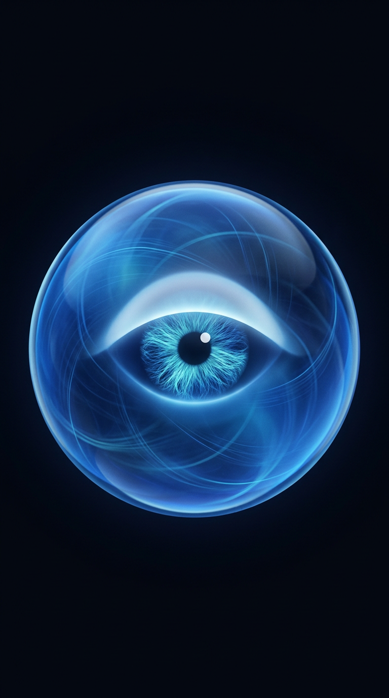
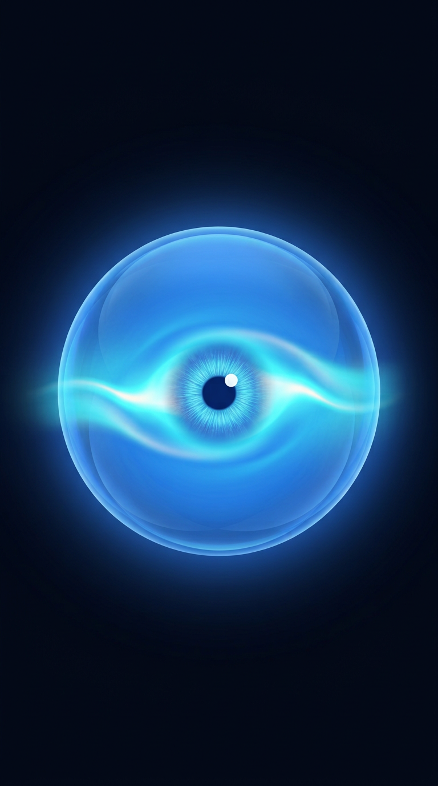
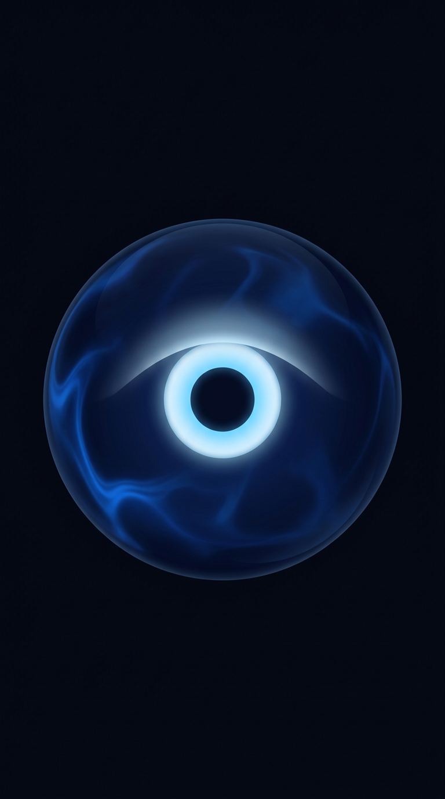
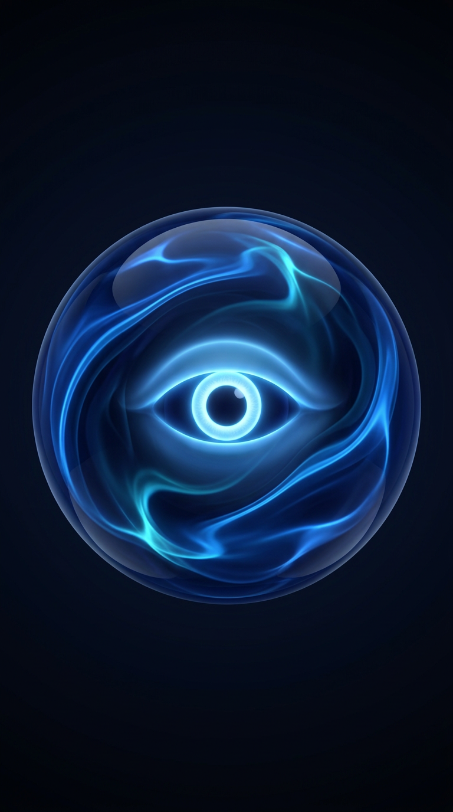
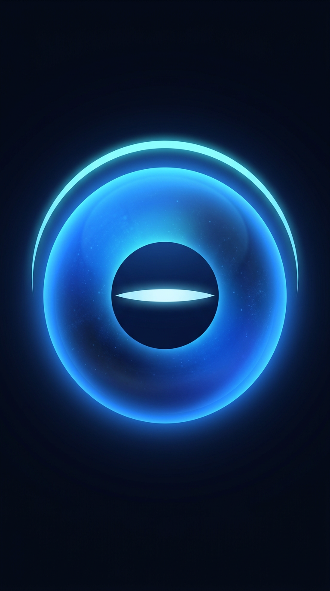
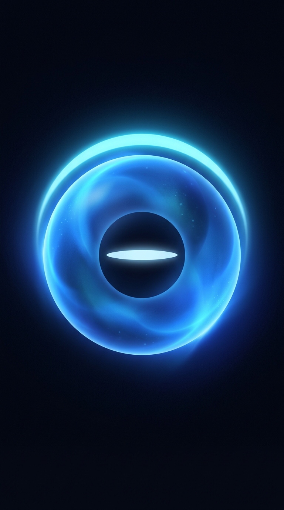

A. Steady Lumen
Clear glass with a literal almond eye. Strongest depth. Risk: reads as an eyeball, which conflicts with D-19 (no face).


B. Deep Well
Deep navy glass with living currents. Most atmospheric. Risk: the ringed eye can look sinister at small sizes.


C. Halo Eclipse
Bright sphere, cyan crescent halo, calm slit eye. Cleanest at phone size and the least face-like. Risk: the dark disc can read as a hole.


Recommendation (for your decision)
C's structure with B's internal currents and a softer slit-like eye that blinks and widens. Depth and calm without the literal eyeball or the sinister ring. Not approved.